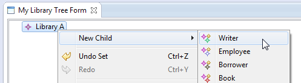
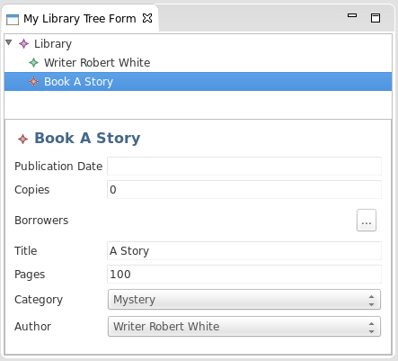

EMF Parsley is a lightweight framework that allows easy and quick UI development based upon EMF. EMF Parsley is built on top of the EMF Edit framework and it implements features like Trees, Forms and Table builders with standard JFace databinding, providing a complete component-based toolset. EMF Parsley can be configured to use all kinds of EMF persistence implementations (XMI, Teneo, CDO) Moreover a DSL allows to easily customize several behaviors in each component.
EMF Parsley aims to provide a complete set of components to visualize your model with the introspective EMF capabilities and can be used to easily build forms, viewers or editors.
There are some components that can be used out-of-the-box and can be considered as a reference implementation of the mechanisms that are the basis of EMF Parsley itslef.
The main feature of EMF Parsley is that you can customize all basic UI behaviours of the components with Dependency Injection mechanisms (based on Google Guice). You can get more info in the Customizations Section, but you don't have to know all details about the internal implementation to inject your own customization because EMF Parsley provides a DSL to easy customize your UI, as explained in the next section.
You can use the DSL by creating a new project with the wizard "Create a new project" -> "EMF Parsley DSL Based project"

Clicking the "Finish" button the wizard will open directly the DSL editor. You can use the content assistant to discover all features.

The DSL allows to customize the most relevant behaviors. Here we list only a few of them:
An EMF Parsley project, as created by the wizard, is an Eclipse plug-in project with a few additional builders.
The emfparsley-gen source folder will contain all the Java files generated by the DSL compiler. The contents of this folder should never be modified manually, since their contents will be overwritten by the DSL compiler.
The src source folder will contain an AbstractUIPlugin generated by the wizard. This is generated only during the creation of the project and it can be safely modified if you need to put other mechanisms in the activator.
IMPORTANT: it is crucial that the activator has the static method getDefault, so you must not remove that method.
If you choose one of the templates provided by the wizard, the src folder will also contain a Java class for the view, which extends the corresponding view of Parsley. This can be safely modified if you need to add some additional mechanisms or contents to the view.
You can then create additional .parsley files in the same project.
If you specify any part in the DSL file, then the Parsley DSL will generate a plugin.xml_emfparsley_gen in the emfparsley-gen folder, in a directory named after the containing module. Then, the EMF Parsley builder will take care of merging the generated content with the plugin.xml in the root folder of the current project. If the plugin.xml does not exist it will create it. Subsequent changes to the DSL file will regenerate plugin.xml_emfparsley_gen and the builder will merge it with plugin.xml. The merging will overwrite in the plugin.xml only the elements that are specified in the DSL. Any other elements in the plugin.xml will not be touched, so you can also add other extension points manually in the plugin.xml.
This merging takes place ONLY if your project has the EMF Parsley builder nature. Since version 0.6.1 this nature is automatically applied to the projects created with our wizard. In existing projects, you have to enable the nature yourself by right-clicking on the project, then "Configure" and then "Enable EMF Parsley builder.
Note that this merging will not consider possible removed part sections in the DSL file. The merging relies on the id, so if you change the id, e.g., the viewid, in the DSL file, then you will end up with two extension points in the plugin.xml. Thus, in general, if you removed a part section from the DSL file, or if you rename an id in a part section, please make sure you manually modify the plugin.xml accordingly. The easiest way is to select to the files, and use the context menu "Compare With" => "Each Other". This way, you will soon detect the changes that have to be manually applied.
Since we also generate the plugin.xml starting from the DSL file, we already make sure that the views will be created via Google Guice injection mechanisms, using a generated executable extension factory.
If you need to obtain an injector corresponding to a specific DSL file, you can use the corresponding generated class injector provider. This is prefixed with the name of the module (first letter capitalized). For example, given this DSL module
module org.eclipse.emf.parsley.examples.firstexample {
...
}
The Java class for the injector provider will be org.eclipse.emf.parsley.examples.firstexample.FirstexampleInjectorProvider.
These injector providers have a static method getInjector() that will return the singleton injector corresponding to that module:
Injector injector = FirstexampleInjectorProvider.getInjector();
The returned injector is singleton in the sense that it is the same injector used to create instances of the view parts specified as extension points in the plugin.xml.
Obtaining the injector this way is useful, for example, when you develop a pure e4 application, where you do not define views in the plugin.xml. See Eclipse 4.x.
The purpose of this first example is to make use of the classical EMF Library Model example and create a view for editing such models using an EMF Parsley enabled plug-in. We will use one of the saveable views shipped with Parsley: a Tree Form View.
So let's start by creating the model plug-in with
You will end up with three plug-ins:
The editor plug-in project can be removed.
Please consider that here we are starting from this well known EMF model taken out-of-the-box from Eclipse, but you can start from your EMF model (in that case you may probably omit the ".edit" and ".editor" plugins, depending on your model).
Now you can create your first example with the appropriate wizard.

The generated project has some classes and a module.parlsey file, which opens automatically:
import org.eclipse.emf.parsley.examples.firstexample.FirstexampleSaveableTreeFormView
/* org.eclipse.emf.parsley.examples.firstexample Emf Parsley Dsl Module file */
module org.eclipse.emf.parsley.examples.firstexample {
parts {
viewpart org.eclipse.emf.parsley.examples.firstexample {
viewname "Firstexample"
viewclass FirstexampleSaveableTreeFormView
}
}
configurator {
resourceURI {
FirstexampleSaveableTreeFormView -> {
// TODO create and return a org.eclipse.emf.common.util.URI
return null;
}
}
}
resourceManager {
initializeResource {
// Optional: initialize an empty Resource
// 'it' is of type Resource
// e.g., it.getContents += myFactory.createMyClass
}
}
}
The viewpart corresponds to the standard Eclipse view part extension point; the Parsley DSL will handle the generation and update of the plugin.xml file. Please have a look at How the DSL handles the plugin.xml for further details.
The wizard will also generate a view part class into the project (in this example, FirstexampleSaveableTreeFormView); you can add other controls into that view, or customize other behaviors. Note that the Parsley DSL will never touch the files into the src source folder. On the contrary, files generated into emfparsley-gen source folder must never be manually modified, since its contents will be regenerated each time you modify the module.parsley file.
For example, let's change the view name into "My Library Tree Form":
...
module org.eclipse.emf.parsley.examples.firstexample {
parts {
viewpart org.eclipse.emf.parsley.examples.firstexample {
viewname "My Library Tree Form"
...
Let's save the file, wait for Eclipse to rebuild, and update the plugin.xml with the new plugin.xml_emfparsley_gen.
(Other viewpart sections can be created; content assist is available for that).
In the generated module.parsley, there is a configurator section, with a TODO comment (The Configurator is detailed in the section Configurator):
configurator {
resourceURI {
FirstexampleSaveableTreeFormView -> {
// TODO create and return a org.eclipse.emf.common.util.URI
return null;
}
}
}
Let's focus on the above resourceURI: our goal is allowing to manage a library model instance which persists on a EMF Resource . So we must specify the URI of the resource that will be edited by our tree form view. In this example we choose to use the EMF default persistence (XMI), but you can provide any URI (e.g. using Teneo, CDO or any other EMF Resource Persistence implementation) In particular here we choose to persist the Resource in a XMI file named "MyLibrary.library" into the user home folder (you might want to change it with any other path). To achieve this, we just need to create such a URI (recall that content assist is available when typing Xbase expressions):
configurator {
resourceURI {
FirstexampleSaveableTreeFormView -> {
return URI.createFileURI( System.getProperty("user.home") + "/MyLibrary.library" );
}
}
}
If you simply copy and paste the above return statement, you'll get an error about unresolvable Java type URI; "Organize Imports" context menu (or its shortcut "Ctrl+Shift+O") can be used to automatically add the missing import (make sure you select URI ).
Note that the specified URI, will be used for loading the resource only for our specific view (the resource will be automatically created if it does not exist).
In the module.parsley there is another section that has been generated by the wizard:
resourceManager {
initializeResource {
// Optional: initialize an empty Resource
// 'it' is of type Resource
// e.g., it.getContents += myFactory.createMyClass
}
}
We can use this section to initialize our resource when it is empty (i.e., the first time the resource is created); (The resourceManager is detailed in section Resource Manager).
In this example, we want to initialize an empty resource with a Library object; so we first need a Dependency from the model plug-in: so open MANIFEST.MF file, go to Dependencies tab, press "Add..." button in "Required Plug-ins" section and insert "org.eclipse.emf.examples.library" among dependencies.
Now we can implement the initializeResource method (as described in the comment, the Resource to initialized is available through the parameter it); the Library object is created using the standard EMF API: we need the factory of the library model:
resourceManager {
initializeResource {
it.getContents += EXTLibraryFactory.eINSTANCE.createLibrary
}
}
Again, use the content assist while typing, e.g., for automatically importing the type EXTLibraryFactory, or use the "Organize Imports" functionality.
Now, we are ready to execute this example: let's get back to the MANIFEST.MF and run the example

As an Eclipse RCP developer you know, of course, that this will start another Eclipse instance (unless you add an Application plug-in to the launch or define an Application in the current plug-in).
In this second Eclipse instance you can show the View in this way:

With this simple view you can start editing the model instance. For example you can set the "name" field; as soon as you start typing characters into this field you will notice that:
if you now perform a "Save" action the persistence mechanism will trigger and you will see that file
<user.home>/MyLibrary.libraryis being created on the file system. From now on, this file will keep the state of the model object whenever you change and save it.
To create a Writer into the Library just right-click on the Library object and select New Child -> Writer

Please note that you might see a slightly different content in the above context-menu in case you deleted the .edit plugin when creating the model (e.g. "Writers Writer" instead of "Writer", "Stock Book" instead of "Book" and similar (this is because with EMF it is possible to customize labels also via .edit plugin).
Now set for instance the writer "name" field and save. Now just play around creating Books, associating them to Writers and so on. As you can see you can entirely manage the EMF model instance: creating, modifying and deleting elements.
Whenever the current selection on the upper side of the view changes, then the lower side shows the detail of this selection.

However, up to this point, you have no control over the field to be shown and its order; for example you may want just the "name" attribute for the Library and "name", "address" and "books" attributes for Writers and maybe "title", "authors" and "category" for Books.
Well, it's indeed very easy to obtain this: just edit the module.parsley file, adding the following import (without ending line with ";")
import org.eclipse.emf.examples.extlibrary.*
and then defining the features to show (the featuresProvider is detailed in section Features Provider):
module ... {
...
featuresProvider {
features {
Library -> name
Writer -> name, address, books
Book -> author, title, category
}
}
}
Remeber that code completion is available, just exploit it since it helps a lot.
If you restart now the application you will see that, when selecting an object, only the features specified in the above section will be shown for each specified classes. Furthermore, they are shown in the specified order.
NOTE: Did you run the application in Debug mode? Well, then you can change fields and order, save and see the changes without even restarting the application.
Do you want to change text used for attribute captions in the form for a specific class? Just add the following (featureCaptionProvider is detailed in section Feature Caption Provider):
...
featureCaptionProvider {
text {
Book : author -> "Written by:"
Writer : name -> "Name:"
}
}
Or do you want to change the label shown on the tree nodes on the upper side and as detail title? Maybe want to format the book label like this? (labelProvider is detailed in section Viewer Label Provider):
...
labelProvider {
text {
Book b -> { '"' + b.title + '"' }
Writer w -> { w.name }
}
}
The result of all the above customizations is shown in the following screenshot (compare it with the previous screenshot):

Now, let's customize the context menus; by default, Parsley will generate context menus using EMF.Edit:

We will now customize the context menu for books and writers, using the menuBuilder in the DSL (context menu customization is detailed in section Contextual Menu).
What we want to achieve is to have a context menu for a Writer to add a new book in the library, and set its author to the selected writer (similarly, we want a context menu for a Book to add a new writer in the library, and set the selected book as one of the new writer's books):
...
menuBuilder {
val factory = EXTLibraryFactory.eINSTANCE
emfMenus {
Writer w -> #[
actionChange("New book", w.eContainer as Library,
[
library |
val book = factory.createBook
library.books += book
book.title = "A new book"
book.author = w
]
),
]
Book b -> #[
actionChange("New writer", b.eContainer as Library,
[
library |
val writer = factory.createWriter
library.writers += writer
writer.name = "A new writer"
writer.books += b
]
)
]
}
}
In this code we use Xbase features like list literals (#[...]) and lambda expressions. We use actionChange that allows to specify a menu performing some actions on the model's elements, keeping track of such changes so that they can be undone -- redo will work as well. The implementation of the menu is specified in the lambda expression passed as the last argument of actionChange; this lambda will receive as argument the model's element specified as the second argument. Only those modifications performed in the lambda concerning such specified model's element will be recorded for undo/redo.
If you now restart the application, you see that the new context menu appears on writer elements:

And selecting such a menu on a writer will add a new book, with a title, and whose author is the selected writer:

You may want to try the new context menu on a book as well.
We also add another context menu for books, using actionAdd: specifying the label for the menu, the containment list in the model, the object to add in such list and a lambda expression that will be executed ONLY after the menu has been selected. In this example, this menu available for a book object will add a new book to the library with the same name of the selected book:
...
menuBuilder {
val factory = EXTLibraryFactory.eINSTANCE
emfMenus {
// ... as above
Book b -> #[
actionChange(
// ... as above
),
actionAdd("New book (same title)",
(b.eContainer as Library).books,
factory.createBook,
[title = b.title]
)
]
}
}
Now, let's customize the contents shown in the tree view: by default, as you can see from the previous screenshots, the tree will show all the contents of the library. If we want to show only the writers and the books we can specify this section in the DSL (the customization of the content provider is detailed in section Viewer Content Provider):
...
viewerContentProvider {
children {
Library -> {
writers + books
}
}
}
and the result can be seen in the following screenshot:
By default, double-clicking on a tree viewer of a saveable view will show a dialog to edit that object (if you customized the featuresProvider, the dialog will use your customized version); by default, if you edit a field in such dialog, the modifications will be applied immediately to the resource: this can be seen in the labels of the tree which are automatically updated and in the dirty state of the view:

Such a strategy for editing is delegated to an injected IEditingStrategy , which is implemented by default by OnTheFlyEditingStrategy .
One may want to avoid this automatic update of the resource, and have the changes applied only when the "OK" dialog button is pressed (if "Cancel" is pressed, no changes should be applied at all). To achieve this behavior, it is enough to bind the alternative implementation UndoableEditingStrategy , in the Guice module. This can be achieved in the DSL using the binding section (Guice bindings are detailed in section Guice Bindings):
...
bindings {
type IEditingStrategy -> UndoableEditingStrategy
}
We strongly suggest you use the content assist to discover default bindings, since they also show Javadoc for each default binding:

Besides types, you can also bind (i.e., inject) specific values that are used in the framework; for example, you can change the orientation of the tree form sash as follows
...
bindings {
type IEditingStrategy -> UndoableEditingStrategy
value int TreeFormSashStyle -> SWT.HORIZONTAL
}
and see the result:
This ends the first tutorial.
This section describes the components that are provided to be used out-of-the-box, that are the foundations for all parts built upon EMF Parsley. Afetr a brief description, for each component we present a set of customizations, just to give an idea of how it works. You can refer to Customizations Section for a complete list.
Components and viewers have to be created using the factories we provide (e.g., for viewers we provide ViewerFactory ); such factories provide specific create methods that require all the needed parameters. These factories must be injected.
The Form Component can be used to rapresent an EObject in a form, like in the image above.

EMF Parsley provides a factory that can be used to create such a component, like in the code below. Here you can see that a form can be configured in 2 lines, the constructor phase and the build&fill phase.
@Inject FormFactory formFactory; (...) formComposite = formFactory.createFormDetailComposite(parent, SWT.NONE); formComposite.init(eObject);
Most of the job is done by the second line of code, which gets the list of EStructuralFeature defined for the EClass (that is the type of the object to represent) and builds a row for each of them. Each row is composed by a caption which defaults to the name of the feature and a control to access the data.
All these aspects can be customized in many ways, for example you can customize the feature list, the captions and the controls.
The list of features displayed on the form can be customized via the Feature Provider that returns the list of the features (in a given order).
The captions of the features shown in the form can be customizzed via the Form Feature Caption Provider.
The Controls in the form can be customized via the Form Control Factory.
Depending on the feature types, some fields can have predefined values (e.g. combo). You can provide the exact proposal list via the Proposal Provider
The Tree Component provides a tree representation of data that can be fed with an EResource, a Resource URI, and a simple EObject. This component uses the EMF Meta-Model information to display objects in the tree.

EMF Parsley provides a factory that can be used to create such a component, like in the code below:
@Inject ViewerFactory viewerFactory; (...) treeViewer = new TreeViewer(parent); viewerFactory.initialize(treeViewer, element);
The Tree Componentcan be customized in several way via the standard EMF Edit facilities or with the EMF Parsley codeinjection based mechanism. If you are familiar with Jface APIs, you can easily use the basic class with some facilties to define the specific implementation. See the corrisponding sections for more details.
An IContentProvider is used in Jface to retrieve the list of elements and children to be showed in the tree viewer. The Viewer Content Provider is the EMF Parsley implementation of that interface, and by default uses the containment mechanisms to provide children as in EMF Edit framework, but it can be customized as weel.
The Viewer Label Provider is the implementation of an ILabelProvider interface and is responsible to provide the text and image representation for each EObject visualized.
The contextual menu can be added to the viewer via an injected ViewerContextMenuHelper , as explained in the Menu section. The Menu Builder allows to fully customize the menus.
The Tree Form Component contains a that provides a tree representation of data that can be fed with an EResource, a Resource URI, and a simple EObject. This component uses the EMF Meta-Model information to display objects in the tree. The component also combines a detail that display the current selected object.

EMF Parsley provides a factory to create such a component.
@Inject TreeFormFactory treeFormFactory; (...) treeFormComposite = treeFormFactory.createTreeFormComposite(parent, SWT.BORDER); treeFormComposite.update(application);
Since Tree Form Component is a combination of Tree Component and Form Component, all their customizations are avaible for it.
The Table Component can rapresent data in a grid, once you have specified the type of objects to represent. It uses metamodel information to build columns as needed, and a TableViewerContentProvider to retrieve the contents of the specified type (see also ).

@Inject ViewerFactory viewerFactory; (...) tableViewer = viewerFactory.createTableViewer(composite, SWT.BORDER | SWT.FULL_SELECTION, eClass);
The class TableViewerColumnBuilder has the responsibility to build the columns of the Table, by using the Features Provider to get the list of features and the Feature Caption Provider for the column headers. The class TableColumnLabelProvider can be used to specify an implementation of ILabelProvider for each cell in the table.
The list fo features displayed on the table can be customized via the Table Feature Provider. This list of features will be used for building the columns of the table.
The headers of the table can be customizzed via the Caption Provider.
All columns have the same size by default, but they can be customizzed via the Configurator for instance in the DSL, like in the example below.
bindings{
value List<Integer> TableColumnWeights -> #[10,20,30,40]
}
The contextual menu can be added to the viewer via an injected ViewerContextMenuHelper , as explained in the Menu section. The Menu Builder allows to fully customize the menus.
The Tree With Columns Component provides a tree representation just like Tree Component, but it also shows table columns representing the features of the specified EClass .
IMPORTANT: the EClass is used to retrieve the features to be shown, and NOT to filter elements to be shown (as opposite to the Table Component). If a given row in the tree represents an object whose class does not have the feature for a given column, then the corresponding table cell for that object will be empty.
For example, the following screenshot shows a tree with columns representing a library; the specified EClass is the Writer so the columns show the features of the Writer's class. Some of these features, e.g., address, firstName and lastName, are defined in the superclasses of Writer. The objects of class Employee have these features as well, while they don't have features that are specific of Writer, e.g., name and books, thus the corresponding cells for employees will be empty.
EMF Parsley provides a factory that can be used to create such a component, like in the code below:
@Inject ViewerFactory viewerFactory; (...) treeViewer = createTreeViewerWithColumns(parent, getEClass(), getContents());
Since this component mixes the features of a tree and a table, the customizations are basically the same shown in the subsections of and .
In this chapter we will describe how EMF Parsley lets you customize the standard behaviours. A DSL is provided to easily customize most common features, but you can also customize all aspects manually (i.e., in directly Java). As a matter of fact each customization is explained in a single section, with the details on how to do that with the DSL (if available) and in Java.
If you want to provide a specific implementation in Java, you can use the Google Guice injection mechanism, by overriding the specific class with your own implementation. Note that in some cases an explicit constructor is needed, with the @Inject annotation to make Guice correctly works; when this is the case, the base class will already have such a constructor and you will only need to override it, but you will also need to add the @Inject annotation explicitly.
Although one can specify any Guice Module , EMF Parsley ships with some default base class modules that should be used for specifying custom Guice bindings. The default base class is EmfParsleyGuiceModule that is suitable to be used in an OSGI environment, like Eclipse itself or RAP (see also Eclipse 4.x & RAP). Our project wizards will automatically use such module as the base class. For CDO we have a specialized base module.
We also have a module to be used in a non OSGI environment, e.g., a pure Java environment: EmfParsleyJavaGuiceModule (this is the base class of EmfParsleyGuiceModule ). This is useful also for testing purposes, for writing plain Junit tests (i.e., not Plug-in Junit tests). This is also used in our testing framework (see EMF Parsley Testing Framework).
All Parsley components are assembled by means of Dependency Injection (DI). This means that whenever some code is in need for functionality (or state) from another component, one just declares the dependency rather then stating how to resolve it, i.e. obtaining that component.
For example, when some code wants to use a label provider, it just declares a field (or method or constructor) and adds the @Inject annotation:
class MyView extends ViewPart {
@Inject
private ILabelProvider labelProvider;
}
It is not the duty of the client code to care about where the actual ILabelProvider comes from or how it is created. When the above class is instantiated, Guice sees that it requires an instance of ILabelProvider and assigns it to the specified field or method parameter. This of course only works, if the object itself is created by Guice. In Parsley almost every instance is created that way and therefore the whole dependency net is controlled and configured by the means of Google Guice.
Guice of course needs to know how to instantiate real objects for declared dependencies. This is done in so called Modules. A Module defines a set of mappings from types to either existing instances, instance providers or concrete classes. Modules are implemented in Java. Here's an example:
public class MyGuiceModule extends AbstractGenericModule {
@Override
public void configure(Binder binder) {
super.configure(binder);
binder.bind(ILabelProvider.class).to(MyLabelProvider.class);
binder.bind(...
}
With plain Guice modules one implements a method called configure and gets a Binder passed in. That binder provides a fluent API to define the mentioned mappings. This was just a very brief and simplified description. We highly recommend to have a look at the Google Guice website to learn more.
Parsley comes with a slightly enhanced module API (this was inspired by Xtext, so, if you are already familiar with the enhnaced Guice module API of Xtext, you can use Parsley API right away).
The enhancement we added to Guice's Module API is that we provide an abstract base class, which reflectively looks for certain methods in order to find declared bindings. The standard base class is EmfParsleyGuiceModule , which can be used in a standard Eclipse OSGI environment. If you are using CDO, it is better to use as base class CDOEmfParsleyModule, which has defaults that better fit a CDO environment. If you do not need OSGI, you can use EmfParsleyJavaGuiceModule (e.g., to run tests with plain Junit, see also Testing Framework).
The most common kind of method is
public Class<? extends ILabelProvider> bindILabelProvider() {
return MyLabelProvider.class;
}
which would do the same as the code snippet above. It simply declares a binding from ILabelProvider to MyLabelProvider. That binding will make Guice instantiate and inject a new instance of MyLabelProviderProvider whenever a dependency to ILabelProvider is declared.
There are two additional kinds of binding-methods supported. The first one allows to configure a provider. A Provider is an interface with just one method:
public interface Provider<T> extends javax.inject.Provider<T> {
/**
* Provides an instance of {@code T}. Must never return {@code null}.
*/
T get();
}
This one can be used if you need a hook whenever an instance of a certain type is created. For instance if you want to provide lazy access to a singleton or you need to do some computation each time an instance is created (i.e. factory). If you want to point to a provider rather than to a concrete class you can use the following binding method:
public Class<? extends Provider<ILabelProvider>> provideILabelProvider() {
return MyLabelProviderFactory.class;
}
The last kind of binding allows to inject values in Parsley components; here are some examples of such bindings implemented in the base class of Parsley Guice module:
/**
* The String constant for Content Assist Shortcut
*/
public String valueContentAssistShortcut() {
return "Ctrl+Space";
}
/**
* The String constant used as a ellipses for Iterable string representation
* when it is too long
*/
public String valueIterableStringEllipses() {
return "...";
}
/**
* The list of Integer weights for a table's columns
*/
public List<Integer> valueTableColumnWeights() {
return Collections.<Integer>emptyList();
}
/**
* The int constant defining the Sash style in a TreeFormComposite
*/
public int valueTreeFormSashStyle() {
return SWT.VERTICAL;
}
Guice bindings can be specified directly in the DSL, in the bindings section.
In this section you can specify bindings of all the three above kinds with type, provide and value respectively, e.g.,
bindings {
type ILabelProvider -> MyLabelProvider
type ... -> ...
provide ProposalCreator -> MyProposalCreatorProvider
...
value int TreeFormSashStyle -> SWT.HORIZONTAL
}
We strongly suggest you use the content assist to discover default bindings, since they also show Javadoc for each default binding:
The Jface Label Provider allows to specify the representation of a given Object. EMF Parsley provides an implementation that uses the information provided via the DSL, as you can see in the snippet below. We allow customization for text, image, font, and foreground and background color.
labelProvider{
text {
Book -> "Book:"+title
Borrower -> "Borrower: "+firstName
}
image {
Book -> "book.png"
}
font {
Book -> // must return a org.eclipse.swt.graphics.Font
}
foreground {
Book -> // must return a org.eclipse.swt.graphics.Color
}
background {
Book -> // must return a org.eclipse.swt.graphics.Color
}
}
However if you want to customize the label provider in Java, you need to provide an implementation of ILabelProvider and injecting it in the spefic module by overriding bindILabelProvider.
EMF Parsley provides such a base implementation with the class ViewerLabelProvider that is meant to be subclassed by the programmer to provide specific implementations like in the example below. Our label provider also implements IFontProvider and IColorProvider , so that you can customize also the font, the foreground and the background color.
This class, like many others in our framework, relies on the polymorphic dispatcher idiom to declaratively specify text and image representations for objects. It boils down to the fact that the only thing you need to do is to implement a method that matches a specific signature: text and image for the String representation and the image, respectively. These methods will need to specify as parameter the type of the object to represent. For the image, you can either specify an image filename or an Image object. File names for images are assumed to refer to files in the icons folder of the containing plug-in.
public class CustomLibraryLabelProvider extends ViewerLabelProvider {
@Inject
public CustomLibraryLabelProvider(AdapterFactoryLabelProvider delegate) {
super(delegate);
}
public String text(Book book) {
return "Book: " + book.getTitle();
}
public String image(Book book) {
return "book.png";
}
public Font font(Book book) {
return // must return a org.eclipse.swt.graphics.Font
}
public Color foreground(Book book) {
return // must return a org.eclipse.swt.graphics.Color
}
public Color background(Book book) {
return // must return a org.eclipse.swt.graphics.Color
}
public String text(Borrower b) {
return "Borrower: " + b.getFirstName();
}
}
As in Jface, the Content Provider is used to get the elements to represent in a tree and their children (as detailed in Table Viewer Content Provider, for tables we use a different content provider). EMF Parsley provides an implementation that uses the DSL as in the code below.
viewerContentProvider{
elements{
Library -> books
}
children{
Library -> books
Book b-> {
new ArrayList()=>[
add(b.author)
addAll(b.borrowers)
]
}
}
}
The developer can also provide a specific implementation of IContentProvider by injecting it in the spefic module (TODO). EMF Parsley provides a base implementation with the class ViewerContentProvider that can be easily used to specify the children of all object on the tree, like in the example below (again, this uses the polymorphic dispatch idiom).
public class CustomLibraryViewerContentProvider extends ViewerContentProvider {
@Inject
public CustomLibraryViewerContentProvider(AdapterFactory adapterFactory) {
super(adapterFactory);
}
public Object elements(Library library) {
return library.getBooks();
}
public Object children(Library library) {
return library.getBooks();
}
public Object children(Book book) {
ArrayList<Object> children = new ArrayList<Object>();
Writer author = book.getAuthor();
if (author != null) {
children.add(author);
}
children.addAll(book.getBorrowers());
return children;
}
}
For table viewers we use a customized content provider, which inherits from the one described in Viewer Content Provider; for tables we only need to specify how the root elements are computed (no children are needed for tables).
This content provider, TableViewerContentProvider , must be configured with the EClass of the objects that will be shown in the table, so the setEClass must be called before this content provider is used. This setup is already automatically performed in views that are shipped with Parsley; in case you need to setup a table viewer yourself with this content provider, we strongly suggest you inject a TableViewerContentProviderFactory and use its method createTableViewerContentProvider(EClass type).
With the information about the EClass this content provider is able to automatically retrieve all the contents of that type from a Resource or any EObject , by retrieving inspecting all the containment references of that type, recursively in the model.
In case you want to optimize the retrieval of contents, or in case you want to show elements of the specified type which are not contained in an EObject (because they are references with containment set to false), you can inject your own custom TableViewerContentProvider and define elements methods (again, this uses the polymorphic dispatch idiom).
In the DSL this can be done using the specific section.
tableViewerContentProvider{
elements{
Library lib -> {
// this is just an optimization: since books are contained in the library
// the default content provider will retrieve them automatically
lib.books
}
Writer w {
// writers' books would not be retrieved by the default content provider
// since they are NOT 'contained' in a writer.
w.books
}
}
}
IMPORTANT: customizations specified in a ViewerContentProvider will NOT be reused by a TableViewerContentProvider .
The Jface Table Label Provider allows to specify the representation of a given cell in a table. EMF Parsley provides an implementation that uses the information provided via the DSL, as you can see in the snippet below. We allow customization for text, image, font, foreground and background color for a given object's feature (which corresponds to a table cell), and also font, and foreground and background color for the entire row.
Concerning fonts and colors, a customization for a single cell has the precedence over the customization of an entire row.
Here's an example.
tableLabelProvider {
text {
Library:name -> 'Name' // constant
Library:books -> 'Books' // constant
Writer:lastName -> name.toFirstUpper // the implicit param is an EStructuralFeature
}
image {
Book: author ->
if (author.name.nullOrEmpty)
"noname.gif"
else
new ImageData("writer.jpeg")
}
font {
Library : name -> JFaceResources.getFontRegistry().getBold(JFaceResources.DEFAULT_FONT)
}
foreground {
Library : books -> Display.getCurrent().getSystemColor(SWT.COLOR_BLUE)
}
background {
Library : address -> Display.getCurrent().getSystemColor(SWT.COLOR_GREEN)
}
rowFont {
Library -> JFaceResources.getFontRegistry().getBold(JFaceResources.DEFAULT_FONT)
}
rowForeground {
Library -> Display.getCurrent().getSystemColor(SWT.COLOR_BLUE)
}
rowBackground {
Library -> Display.getCurrent().getSystemColor(SWT.COLOR_GREEN)
}
}
EMF Parsley uses this kind of provider wherever a list of features is requested for a certain EClass. The default is to return the list of all the features in the EClass, but the programmer can customize it (for instance, by returning only a superset, or in a different order) on an EClass-based strategy. Thus you can use the DSL to specify that list, as in the snipped below.
featuresProvider{
features{
Book -> title, author, category, pages
}
}
If you want to customize it in Java, there are more ways to customize this behaviour, but we need to go deep in some details of the Feature Provider implementation.
When the framework builds components according to the EStructuralFeature s of a given EClass it relies on an injected FeaturesProvider . The default behavior is to simply return all the features of the a given EClass, in the order they are defined in the EClass, as implemented by the method defaultFeatures in FeaturesProvider .
You can set the mappings, i.e., specify the structural features you want to be used given an EClass, by implementing the method buildMap, which receives the FeaturesProvider.EClassToEStructuralFeatureMap that can be filled with the method mapTo; for instance, using the EMF extended library example, this customization will return only the name and address features for Library, the firstName, lastName and address for Person, and the firstName, lastName and books (but not address) for Writer (which inherits from Person).
import static org.eclipse.emf.examples.extlibrary.EXTLibraryPackage.Literals.*;
import org.eclipse.emf.parsley.ui.provider.EStructuralFeaturesProvider;
public class LibraryEStructuralFeaturesProvider extends
FeaturesProvider {
@Override
protected void buildMap(EClassToEStructuralFeatureMap map) {
super.buildMap(map);
map.mapTo(LIBRARY,
LIBRARY__NAME, ADDRESSABLE__ADDRESS);
map.mapTo(PERSON, PERSON__FIRST_NAME, PERSON__LAST_NAME, ADDRESSABLE__ADDRESS);
map.mapTo(WRITER, PERSON__FIRST_NAME, PERSON__LAST_NAME, WRITER__BOOKS);
}
}
Another possibility is to build a map which relies on Strings both for the EClass and for the list of EStructuralFeature ; note that the name of the EClass should be obtained by using getInstanceClassName(); you can also combine the two approaches.
As an extension, you can use the TableFeaturesProvider : the customizations will be applied only to Tables, not to Forms.
If there are no specific customization in the TableFeaturesProvider , we fall back to FeaturesProvider .
The FeatureCaptionProvider provides captions for the features in Tables and Forms. Here you can see an example of the DSL.
featureCaptionProvider{
text{
Book:author -> "Written by:"
Writer:name -> "Name:"
}
}
If you want to customize it in Java, you need to derive from FeatureCaptionProvider . It can be customized, with injection : this way you can customize the caption label for controls in a form, dialog, and the headers in a table's column. The framework uses a polimorphic mechanism to find customizations: it searches for methods with a specific signature: the name is built by the string 'text' followed by the EClass and the EStructuralFeature. All parts of the name are separated by an underscore character and the method must accept a parameter of type EStructuralFeature.
In the following example we specify the caption text for the feature 'Author' of Book and the feature 'Name' for Writer.
public String text_Book_author(final EStructuralFeature feature) {
return "Written by:";
}
public String text_Writer_name(final EStructuralFeature feature) {
return "Name:";
}
If no customization is provided, the text will be computed using the feature's name. This will always be the default for table column headers (since no object is available when building the table); while for form and dialog captions we use a slightly different default strategy, as shown in Form and Dialog Feature Caption Provider.
The FormFeatureCaptionProvider (DialogFeatureCaptionProvider , respectively) can be used if you want to define the description only for forms (for dialogs, respectively). For example using the Tree Form your definition will not be used in the tree.
In this case you can also define a method the returns directly the Label , like in the example below. In such methods there is another parameter that is the parent composite (that is automatically passed by the framework).
public Label label_Writer_name(Composite parent, EStructuralFeature feature) {
Label label = defaultLabel(parent, feature);
label.setBackground(getFormToolkit().getColors().getColor(IFormColors.TITLE));
return label;
}
In the DSL you have the corresponding two sections available:
formFeatureCaptionProvider{
text{
Book:author -> "Written by:"
}
label{
Writer:name -> createLabel(parent, "Name")
}
}
dialogFeatureCaptionProvider{
text{
Book:author -> "Author:"
}
label{
Writer:name -> createLabel(parent, "Writer's name")
}
}
If there is no customization in the FormFeatureCaptionProvider (DialogFeatureCaptionProvider , respectively), the following steps are executed to create the text for the label:
Some controls use a list of proposals to help the end user experince: for example a single value reference feature will be rendered by default with a combo box, automatically filled with all the possible targets for that reference; similarly for Enum features. You can customize the proposals, and you can specify proposals also for simple text fields (a content assist dialog will show up for text fields).
For each feature you can specify a list of proposals via the DSL. In the example below, we first compute the default proposals for that feature and then we filter the proposals.
proposals{
Book:author -> {
defaultProposals(feature).
filter(Writer).
filter[name.startsWith("F")].toList
}
}
This customization can be done also in Java, by extending the class ProposalCreator and implementing the method
public List<?> proposals_Book_author(Book book) {...}
. This method follows the same convention on the signature name as explained in Feature Provider.
A context menu can be added to any StructuredViewer by using an injected ViewerContextMenuHelper . This provides some methods for adding the context menu
@Inject ViewerContextMenuHelper contextMenuHelper; (...) // simplest form contextMenuHelper.addViewerContextMenu(viewer); // if you have an AdapterFactoryEditingDomain already contextMenuHelper.addViewerContextMenu(viewer, editingDomain); // if you're inside an IWorkbenchPart contextMenuHelper.addViewerContextMenu(viewer, editingDomain, part);
The contents of such menu are built automatically by the framework or customized by the programmer, as shown in the next section.
EMF Parsley uses the standard EMF.Edit features to build the contextual menus of viewers (thus you will get by default the standard "New Child" and "New Sibling" sections in the context menu).
You can customize context menus on a per class basis by extending the EditingMenuBuilder (and injecting it in the Guice module). However, we suggest to use the DSL for this task, as detailed in the following.
EMF Parsley logically separates the menu into 2 parts. The first section contains all common edit commands such as copy and paste. The second section contains EMF specific commands, such as for example new child. You can use the DSL to fully customize the menu, as in the example below.
menuBuilder{
menus{
Library-> #[
submenu("Edit",#[
actionCopy,
actionCut,
separator,
actionPaste
])
]
}
emfMenus{
Library lib -> #[
actionAdd("Add a new book", lib.books,
EXTLibraryFactory.eINSTANCE.createBook)
]
}
}
For each EClass of your meta-model you can specify a list of menu items (the #[] is the Xbase syntax for a list literal) Content assist is available to select the editing actions, the separator and also methods for EMF menu part.
In the emfMenus section, you can use some methods of the EditingMenuBuilder class, as detailed in the following.
The method actionAdd, specifying the label for the menu, the containment list in the model, and the object to add in such list when the menu is selected (Note that it is up to you to specify a containment list); the DSL will issue an error if the object cannot be added to the list (because it is not of the right type). The object should be created using the standard EMF API (i.e., using the EMF factory for your model).
If you want to specify further initialization instructions for the created object you can pass a lambda expression as another argument to actionAdd: that lambda will be executed ONLY after the menu has been selected, i.e., ONLY after the created object is part of the resource:
emfMenus{
Writer w -> #[
actionAdd("Add a new book for the writer",
(w.eContainer as Library).books,
EXTLibraryFactory.eINSTANCE.createBook,
[ book | book.title = "A new book" ]
)
]
}
IMPORTANT: do not set any reference feature of the created EObject in the lambda, i.e., do not do something like the following
emfMenus{
Writer w -> #[
actionAdd("Add a new book for the writer",
(w.eContainer as Library).books,
EXTLibraryFactory.eINSTANCE.createBook,
// WRONG: don't do that
[ book | book.author = w ]
)
]
}
This will not work if you undo the command: the writer that has been added to the library will be removed, and the book.author will be a dangling reference! as a consequence the resource cannot be saved.
If you want to implement more complex menu commands that do not only add elements to a container, you can use the method actionChange, specifying the label for the menu, the model's element that will be affected by the changes specified as a lambda expression (the third argument). The lambda expression will also get the specified model's element as argument. The model's element can also be the whole resource itself (formally, it can be any EMF Notifier ).
It is crucial to specify the correct model's element to make undo/redo work correctly: all the modifications performed in the lambda expression that concern the specified element will be recorded, in order to implement undo/redo.
For example, this command, that will add a new book to the library, and sets its author to the selected writer will work as expected, and selecting undo will effectively remove the book from the writer's list and from the library:
emfMenus{
Writer w -> #[
actionChange("New book", w.eContainer as Library,
[
library |
val book = factory.createBook
library.books += book
book.title = "A new book"
book.author = w
]
)
]
}
This works since we specify the containing library as the model's element, thus, all modifications that concern the library will be recorded.
On the contrary, this variant, will perform exacty the same actions on the model, but selecting undo will only remove the book from the writer's list, and the book will still be present in the library:
emfMenus{
Writer w -> #[
// in this variant undo will only unset the book's author,
// but it will not remove the added code from the library
// since we record changes concerning the writer only
actionChange("New book (variant)", w,
[
writer |
val library = writer.eContainer as Library
val book = factory.createBook
library.books += book
book.title = "A new book"
book.author = w
]
)
]
}
This happens since we specified the writer as the model's element, thus only the changes that concern the writer will be undone.
Drag and drop can be added to any StructuredViewer by using an injected ViewerDragAndDropHelper , using its methods addDragAndDrop.
Currently, drag and drop is completely delegated to EMF.Edit.
The actual creation of text field, buttons, labels, etc. is delegated to an implementation of IWidgetFactory , which has several methods like createText, createLabel, etc. We provide two implementations of such interface
Usually, you do not need to customize such factories, which are used internally by the framework, like in and .
You may want to customize such factories in case all your controls must have a specific style; in such case, just inherit from our base classes (there is no DSL section for such customizations, since they can be made in plain Java easily) and bind such custom implementations in the Guice module.
EMF Parsley lets you customize the form controls via the DSL as in the following example.
formControlFactory {
control {
Library : name -> { }
Writer : books ->
createLabel(
books.map[title].join(", "))
Writer : name -> { createLabel(parent, "") }
target { observeText }
Writer : firstName ->
toolkit.createLabel(parent, "")
target observeText(SWT::Modify)
Borrower : firstName -> {
createText(firstName, SWT::MULTI, SWT::BORDER,
SWT::WRAP, SWT::V_SCROLL)
}
}
}
For each pair EClass, EStructuralFeature you can either simply return a Control or specify also the target for the databinding (see some examples above). If you want to customize the controls in Java, you can extend the class FormControlFactory . Using the same polimorphic mechanism of the labels, the programmer can write a method with the keyword 'control' followed by the EClass and EStructuralFeature undescore-character-separated. The method must accept as parameters the DataBinding Context and the Feature Observable that can be used for databinding.
public Control control_Writer_name(DataBindingContext dbc,IObservableValue featureObservable) {
//Creating the control
Text text = getToolkit().createText(getParent(), "");
text.setData(FormToolkit.KEY_DRAW_BORDER, FormToolkit.TREE_BORDER);
text.setBackground(getToolkit().getColors().getColor(IFormColors.TITLE));
//Binding the control to the feature observable
dbc.bindValue(SWTObservables.observeText(text, SWT.Modify), featureObservable);
return text;
}
If you want to customize controls in Dialog, you can use the specific DSL section dialogControlFactory:
dialogControlFactory {
control {
...
}
}
This customization is exactly as in the case of the form of the previous section.
The concept of EditingDomain is crucial for editing EMF models; we refer to the EMF.Edit documentation for further details. In particular, the editing domain keeps track of commands executed on an EMF model, thus enabling undo/redo mechanisms and "dirty state" management for saveable parts.
EMF Parsley aims at hiding the management of the editing domain, so that everything should work smoothly and as expected, in an automatic way. In particular, it is rare that you need to perform customizations on this mechanisms. However, there might be cases when you need to be aware of this concept, especially if you need to use one of our customizations. Moreover, you need to be aware of some of the assumptions that EMF Parsley automatic mechanisms rely on (we inherit these assumptions from EMF.Edit itself).
First of all, all the EMF Resource s that you want to edit with EMF Parsley must be contained in a ResourceSet , which, in turn, must be contained in an EditingDomain . This is achieved automatically when using our ResourceLoader, Resource Loader.
Two resources loaded with different resource loaders will be contained in two different editing domains. Two resources loaded with the same resource loader will be in the same resource set and use the same editing domain.
Our default implementation of editing domain uses the EMF AdapterFactoryEditingDomain , so that all the EMF.Edit default mechanisms will work correctly. In particular, our customization uses Google Guice mechanisms (see Dependency Injection With Google Guice), thus if you need an editing domain in your own views all you have to do is to inject it, e.g.,
@Inject private EditingDomain editingDomain;
If you need to provide a custom implementation of the editing domain (for example, because you want to use a transactional editing domain), you need to implement a custom Google Guice Provider and in your Guice module override this method:
public Class<? extends Provider<EditingDomain>> provideEditingDomain() {
return DefaultEditingDomainProvider.class;
}
Such custom provider will then have to create an editing domain and return it.
We have some custom editing domain providers that might be useful in some situations:
All the EMF Parsley saveable views and editors will have their own editing domain (modulo what we explained in Editing Domain Provider).
The EMF Parsley views that react on selection do NOT have a preset editing domain, since they will represent (and possibly edit) EMF objects selected in some other views, i.e., such objects can be contained in resources of different resource sets (and different editing domains). Thus, the editing domain of the currently shown object is dynamically retrieved through an injected EditingDomainFinder. This default implementation basically delegates to the standard EMF.Edit mechanisms for retrieving the editing domain. In cases where the editing domain cannot be found (e.g., because the object is not contained in a resource, or its resource is not contained in a resource set, or its resource set is not contained in an editing domain), then editing will not be possible (i.e., context menus and drag and drop Drag and Drop will not work).
You can provide and bind a custom implementation of the EditingDomainFinder which is particularly useful if you manage a transactional editing domain.
This is required only in some specific and advanced scenarios.
In standard situations you will not have to worry about that, and editing mechanisms will work out of the box, including dragging an element from one view into another view, provided they are in the same resource set and such drag and drop makes sense.
Concerning saving objects, there are some specific parts that can be customized:
The class ResourceLoader can be used to handle resource loading. This class uses internally the Resource Manager.
Tasks concerning an EMF Resource are delegated to ResourceManager .
One of such tasks is initializing the resource, e.g., when, after loading, it is found empty. You can derive from this class (and bind it in the Guice module) and provide a custom implementation of the method initialize.
Saving a resource is also delegated to this class, using the method save, which is expected to return a boolean value representing whether saving has succeeded (the default implementation simply saves the resource and returns true).
In the DSL, you can specify a resourceManager block, and within that block you can specify initializeResource and saveResource, which correspond to inizialize and save methods, respectively. In both cases, inside the block expression, the resource is available with the name it; for example
import org.eclipse.emf.parsley.examples.library.EXTLibraryFactory
...
resourceManager {
val EXTLibraryFactory libraryFactory = EXTLibraryFactory.eINSTANCE;
initializeResource {
// it is of type org.eclipse.emf.ecore.resource.Resource
it.getContents() += libraryFactory.createLibrary
}
saveResource {
// it is of type org.eclipse.emf.ecore.resource.Resource
it.save(null)
return true
}
}
...
Resource saving is delegated to ResourceSaveStrategy which, by defaults only saves the passed Resource , by delegating to ResourceManager (see ). You can inject your own save strategy and customize the saving strategy, for instance, you may want to validate the resource before saving (a usable example of this strategy is ValidateBeforeSaveStrategy , see also section Validation).
In Parsley, instead of using abstract classes, we often provide concrete classes that implement superclass' abstract methods (or interface methods) by delegating to an injected Configurator . Such configurator calls methods in its hierarchy using polymorphic dispatch; in particular, the first argument passed to these methods is the object requesting that specific service to the configurator; typically it will be a UI object, e.g., a view part.
These are the methods that can be customized declaratively:
/**
* Returns the {@link URI} of the resource for the requestor for any use the requestor may need it
* @param requestor
* @return
*/
public URI resourceURI(Object requestor) {
return null;
}
/**
* Returns the {@link EClass} for the requestor
* @param requestor
* @return
*/
public EClass eClass(Object requestor) {
return null;
}
The idea is that clients that use such an injected instance should call the get methods, e.g., getEClass, while the customization should be defined using polymorphic dispatch, e.g.,
class MyConfigurator extends Configurator {
public EClass eClass(MyView1 view1) {
return ...;
}
public EClass eClass(MyOtherView view) {
return ...;
}
}
In the DSL, you can specify a configurator section, e.g., (the requestor object can be accessed using the implicit variable it):
module my.project {
configurator {
resourceURI {
MyTreeFormView -> {
return ...;
}
MyTableView -> {
return ...;
}
}
eClass {
MyTableView -> {
return ...;
}
MyTableFormView -> {
return ...;
}
}
}
}
The project wizard will generate in the module.parsley the required configurator sections, depending on the specific template chosen, with some // TODO comments to help implementing them, e.g.,
module my.project {
configurator {
eClass {
MyView -> {
// TODO return the EClass of objects to be shown
}
}
resourceURI {
MyView -> {
// TODO create and return a org.eclipse.emf.common.util.URI
return null;
}
}
}
}
EMF Parsley supports standard EMF validation automatically, e.g., via the context menu "Validate"; thus, if you already have constraints implemented for your meta-model, the validation action will check them.
EMF validation can also be triggered manually using an injected ValidationRunner , which provides methods for validating a single EObject or an entire Resource . These validate methods return an EMF Diagnostic that can be used to find out possible errors, warnings and infos collected during the validation.
There are overloaded versions of validate methods that also take an IssueReporter :
/**
* Validates, reports diagnostics through the passed {@link IssueReporter}
* and returns the list of reported diagnostics.
*
* @param eObject
* @param reporter
* @return
*/
public List<Diagnostic> validate(EObject eObject, IssueReporter reporter) {
return reporter.report(validate(eObject));
}
/**
* Validates, reports diagnostics through the passed {@link IssueReporter}
* and returns the list of reported diagnostics.
*
* @param resource
* @param reporter
* @return
*/
public List<Diagnostic> validate(Resource resource, IssueReporter reporter) {
return reporter.report(validate(resource));
}
The reporter is asked to report the collected diagnostic and it is expected to return the list of issues effectively reported. For example, an issue reporter can report only errors (e.g., diagnostic whose severity is Diagnostic.ERROR), while ignoring warnings and other diagnostic information.
We provide a utility class that can be injected, DiagnosticUtil , with utility methods, like flattening diagnostic into a list (EMF diagnostic are typically nested in a tree form), to quickly select only the errors, and to have a string representation.
The default implementation of IssueReporter is DialogErrorReporter , which uses an EMF dialog to report ONLY errors. Another implementation that can be used for testing purposes is LogIssueReporter , which logs diagnostic using the corresponding log4j methods (i.e., error, warn, info).
An example of use of the above classes can be found in ValidateBeforeSaveStrategy (see section Resource Save Strategy):
public class ValidateBeforeSaveStrategy extends ResourceSaveStrategy {
@Inject
private ValidationRunner validationRunner;
@Inject
private IssueReporter issueReporter;
@Override
public boolean save(Resource resource) throws IOException {
if (!precondition(resource)) {
return false;
}
return super.save(resource);
}
protected boolean precondition(Resource resource) {
return validationRunner.validate(resource, issueReporter).size() == 0;
}
}
Thus, if you use a ValidateBeforeSaveStrategy , with the default Guice bindings, upon saving, if validation finds errors, it will cancel the saving and it will show a dialog with errors.
In this chapter we describe some advanced features.
We provide some utility classes for testing EMF Parsley components in the feature "Emf Parsley Junit4 Support". By deriving from one of the abstract classes in our testing bundle, you will be able to write tests that are meant to be run as Junit test, that is to say, NOT as Plug-in Junit tests. Thus, you will not need a running Eclipse product to execute such tests: they will be much faster. Indeed, many parts of Parsley can be tested even without a running Eclipse.
We use these classes for testing most of our classes; you might want to have a look at the project org.eclipse.emf.parsley.tests for some usage examples.
Instead of using the Extension Point mechanism, EMF Parsley leverages from DSL and Google Guice Injection.
Because of this, it is very easy to use it with Eclipse 4.x (e4).
First Example Setup
If you followed the steps described in section First Example you will have already what we need to begin. Otherwise the following wizard will bring you to that point.
You will end up with three plug-ins:
As a reminder, in section First Example we reached the point where we launched a second Eclipse instance (but, of course, just defining a product you could have a standalone 3.x application) with a view (called "My Library Tree Form") that allowed to manage the model.
Preparing for a pure e4 Application
What we will do now is starting from the previous step and create an e4 Application (on top of the previous plug-ins) that gets to the same result, but now with a pure e4 Part.
In order to do this we need to export the "org.eclipse.emf.parsley.examples.firstexample" package from the first plug-in.
Create an e4 Application
Now let's create a new, empty, e4 application, e.g. "org.eclipse.emf.parsley.examples.firstexample.application" (you can find details on how to create e4 applications in our tutorials).
Create a Part and ensure that the application starts.
Using a TreeComposite into an e4 Part
In the just created plug-in we need dependencies from the previous plug-ins: so open the org.eclipse.emf.parsley.examples.firstexample.application/MANIFEST.MF file, go to Dependencies tab and add the three previous plug-ins. Add also "org.eclipse.emf.parsley" plug-in. Don't forget to add the previous, and the required plug-ins, also to the Product.
Open the Part java class and make the following changes:
// Use these imports during Organizing Imports operation
import org.eclipse.emf.common.util.URI;
import org.eclipse.emf.ecore.resource.Resource;
import org.eclipse.swt.widgets.Composite;
// The part implements IMenuListener for context menu handling
public class MyEclipse4Part {
//the EMF Parley composite for showing a tree and a detail form
private TreeFormComposite treeFormComposite;
//the EMF Resource
private Resource resource;
//URI for EMF Resource
private URI uri = URI.createFileURI(System.getProperty("user.home")
+ "/MyLibrary.library");
Modify the @PostConstruct method with this code:
@PostConstruct
public void postConstruct(Composite parent) throws Exception {
// Guice injector
private Injector injector = FirstexampleInjectorProvider.getInjector();
// The EditingDomain is needed for context menu and drag and drop
EditingDomain editingDomain = injector.getInstance(EditingDomain.class);
ResourceLoader resourceLoader = injector.getInstance(ResourceLoader.class);
//load the resource
resource = resourceLoader.getResource(editingDomain, uri).getResource();
TreeFormFactory treeFormFactory = injector.getInstance(TreeFormFactory.class);
//create the tree-form composite
treeFormComposite = treeFormFactory.createTreeFormComposite(parent, SWT.BORDER);
// Guice injected viewer context menu helper
ViewerContextMenuHelper contextMenuHelper = injector.getInstance(ViewerContextMenuHelper.class);
// Guice injected viewer drag and drop helper
ViewerDragAndDropHelper dragAndDropHelper = injector.getInstance(ViewerDragAndDropHelper.class);
// set context menu and drag and drop
contextMenuHelper.addViewerContextMenu(treeFormComposite.getViewer(), editingDomain);
dragAndDropHelper.addDragAndDrop(treeFormComposite.getViewer(), editingDomain);
//update the composite
treeFormComposite.update(resource);
}
The Google Guice Injector (not to be confused with the Eclipse e4 Injector) is retrieved using the injector provider class generated by the DSL compiler (see also Obtaining the Injector).
If you now run the application you will be able to manage the model:

but you will notice that it is not possible to persist the changes to the model.
Adding the dirty state and Save command
In order to allow persisting the model changes we have to add the dirty state handling to the part and the Save command to the application. Let's start with adding the following attribute to the part
@Inject MDirtyable dirty;
add to @PostConstruct method the following code in order to update the dirty state
editingDomain.getCommandStack().addCommandStackListener(
new CommandStackListener() {
public void commandStackChanged(EventObject event) {
if (dirty != null)
dirty.setDirty(true);
}
});
and add the @Persist method, which will be called when the part is saved
@Persist
public void save(MDirtyable dirty) throws IOException {
resource.save(null);
if (dirty != null) {
dirty.setDirty(false);
}
}
and, in the end, add the Save handler along with the correspondent Command and Menu (you can find how to create handlers, commands and menus in an e4 applications in our tutorials)
import javax.inject.Named;
public class SaveHandler {
@Execute
void execute(EPartService partService, @Named(IServiceConstants.ACTIVE_PART) MPart part) {
partService.savePart(part, false);
}
}
As you may know RAP (Remote Application Platform) is a technology that allows you to run an Eclipse RCP application over the web.
In order to obtain this goal you have to setup a specific RAP Target Platform, for instance the one that RAP itself provides once you install it.
However when you want to use an Eclipse RCP framework over the RAP Platform, you generally have to deal with dependencies, since not all Eclipse frameworks are ready-to-use with RAP, especially those related with the SWT layer.
EMF Parsley provides a proper RAP Target Platform that allows you to start leveraging Parsley potentials to the web the same way you have learned to do with desktop (RCP) development.
Installing the RAP Tools
To begin with, you need to install the RAP Tools into the IDE. This can be accomplished with the following steps:
Setup the EMF Parsley RAP Target Platform
After having installed EMF Parsley as described here and created a new workspace, you can setup the EMF Parsley RAP Target Platform in the following way:
You will end up with a RAP-enabled workspace, enhanced by EMF and Parsley!
Running the Parsley RAP UI Example
Here is the fastest way to get a working web application with all the stuff put togheter:
What you will get is a web application that allows you to interact with the model instance as you would do in a desktop (RCP) environment.

In this web application you can see two views:
Of course, since this is a web application, you can also open a browser on another pc or device on the same network and type the address, replacing 127.0.0.1 with the IP of the machine where the application was launched.
Running the Parsley RAP CDO Example
The EMF default XMI persistence is certainly very handy to start with, but as soon as you want a more production-ready EMF persistence architecture, well, CDO is for sure the way to go. In fact with CDO you basically have an EMF model instance shared between clients, that also allows the clients to be synchronized with the model changes.
In this example, in order to keep things simple, we will use CDO with an in-memory store (MEMStore) whose contents will be lost once the server is stopped. However CDO can be configured for usage with RDBMS, Object-oriented or NO-SQL databases (see here for details)
To start with we need a CDO Server running and we can obtain it with an example plugin that can be used both in an RCP and in a RAP workspace.
Now we can create the web application that will use the CDO server just started.
The plug-in projects created are:
Then let's start the application
If you happen to see this

just press the refresh button and should see the following

Now feel free to open the same address from more browsers window (yes, on different machines or devices, possibly) and see the power of this technology stack at work!


public EmfParsleyGuiceModule createModule()
FirstexampleActivator.getDefault().getInjector();you need to do
FirstexampleInjectorProvider.getInjector();
@Inject ViewerFactory viewerFactory; (...) treeViewer = createTreeViewerWithColumns(parent, getEClass(), getContents());Since this component mixes the features of a tree and a table, the customizations are basically the same shown in the subsections of and .
labelProvider{
...
font {
Book -> // must return a org.eclipse.swt.graphics.Font
}
foreground {
Book -> // must return a org.eclipse.swt.graphics.Color
}
background {
Book -> // must return a org.eclipse.swt.graphics.Color
}
}
tableLabelProvider {
...
font {
Library : name -> JFaceResources.getFontRegistry().getBold(JFaceResources.DEFAULT_FONT)
}
foreground {
Library : books -> Display.getCurrent().getSystemColor(SWT.COLOR_BLUE)
}
background {
Library : address -> Display.getCurrent().getSystemColor(SWT.COLOR_GREEN)
}
rowFont {
Library -> JFaceResources.getFontRegistry().getBold(JFaceResources.DEFAULT_FONT)
}
rowForeground {
Library -> Display.getCurrent().getSystemColor(SWT.COLOR_BLUE)
}
rowBackground {
Library -> Display.getCurrent().getSystemColor(SWT.COLOR_GREEN)
}
}
public Label getLabel(Composite parent, EClass eClass, EStructuralFeature feature)be warned that this method has changed its signature into
public Label getLabel(Composite parent, EObject o, EStructuralFeature feature)and of course also its semantics, since you need to pass an EObject not its EClass.
@Inject ViewerContextMenuHelper contextMenuHelper; (...) // simplest form contextMenuHelper.addViewerContextMenu(viewer); // if you have an AdapterFactoryEditingDomain already contextMenuHelper.addViewerContextMenu(viewer, editingDomain); // if you're inside an IWorkbenchPart contextMenuHelper.addViewerContextMenu(viewer, editingDomain, part);